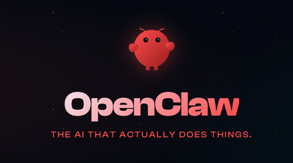

OpenClaw 是一个 开源 AI Agent（AI 自动化助手）。它不仅聊天，还能自动操作浏览器、执行脚本、管理文件、定时任务、自动处理工作而且可以连接多个 AI 模型，例如：Kimi、MiniMax、DeepSeek、Claude、并且可以接入 Telegram / 微信 / Discord 等聊天工具使用。
很多人安装失败主要是这几个原因：
1️⃣ GitHub 下载慢
2️⃣ npm 安装慢
3️⃣ OpenAI API 无法访问
解决方法：
优先使用国内模型：Kimi、MiniMax、DeepSeek、这样不需要科学上网也能用。
安装：Node.js
下载：https://nodejs.org
安装完成后测试：node -v
如果显示版本号说明成功。
打开 终端 / CMD / PowerShell
输入：npm install -g openclaw@latest
等待安装完成。
如果你在 中国大陆，建议选：MiniMax或Kimi
原因：国内 API，不需要翻墙，中文支持好，输入对应 API Key 即可。
运行：openclaw gateway --port 18789
打开浏览器：http://localhost:18789
就能看到 OpenClaw 控制台。
在终端输入任务：
openclaw run --goal "每天早上8点推送AI新闻"
OpenClaw 会：
1️⃣ 搜索新闻
2️⃣ 整理内容
3️⃣ 定时推送
最简单稳定组合：
OpenClaw
+ MiniMax
+ Telegram / 飞书
官方也提供一键安装：
curl -fsSL https://openclaw.ai/install.sh | bash
会自动安装：Node.js、OpenClaw、依赖库
